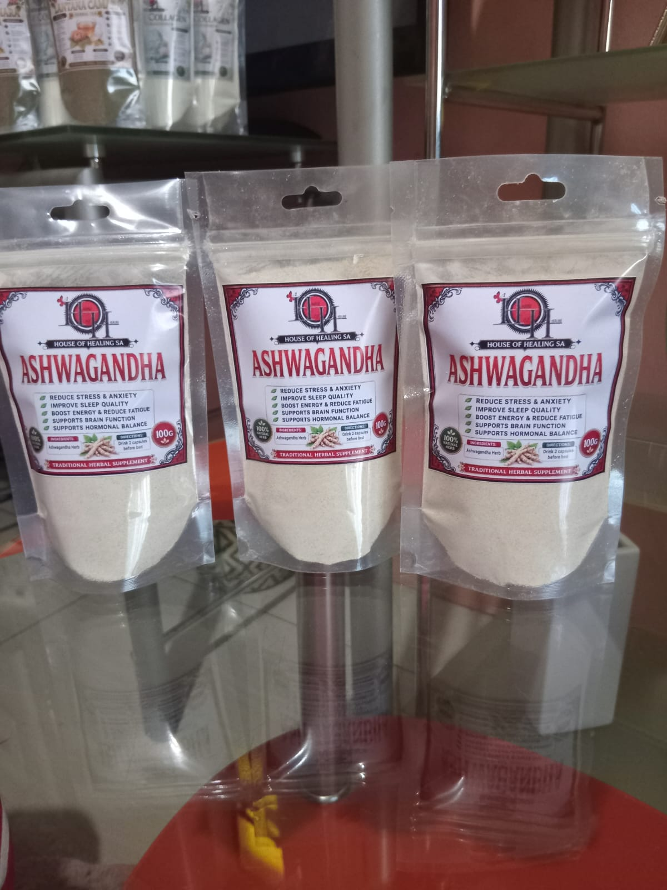

Ashwagandha
Ashwagandha is a traditional herb that has been used for centuries in Ayurvedic wellness practices. It is commonly used to support the body's response to everyday stress and promote relaxation.
Read More
Research suggests that certain Ashwagandha preparations may help improve sleep quality and reduce perceived stress, although results vary between individuals. The powder offers a convenient way to incorporate this traditional herb into a wellness routine.
R90